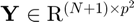
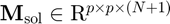
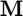
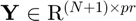
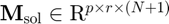

odesol_vec2mat
Transforms the solution matrix for a vector-valued ODE into the solution array for the corresponding matrix-valued ODE.
Back to ODE Solver Toolbox Contents.
Contents
Syntax
M = odesol_vec2mat(y) M = odesol_vec2mat(y,p)
Description
M = odesol_vec2mat(y) transforms the solution matrix,  (y in MATLAB), for the vector-valued ODE into the solution array,  (M in MATLAB) for the corresponding matrix-valued ODE. It is assumed that  is a square matrix.
M = odesol_vec2mat(y,p) transforms the solution matrix,  (y in MATLAB), for the vector-valued ODE into the solution array,  (M in MATLAB) for the corresponding matrix-valued ODE. p specifies the number of rows of M.
Input/Output Parameters
| Variable | Symbol | Description | Format | |
| Input | y | solution matrix - the nth row of y stores the transpose of the solution corresponding to the nth time in the time vector, |
(N+1)×pr double |
|
| p | (OPTIONAL) number of rows of state matrix | 1×1 double |
||
| Output | M | solution array - the nth layer of M stores the solution corresponding to the nth time in the time vector, |
p×r×(N+1) double |
Example
Click here for an example.